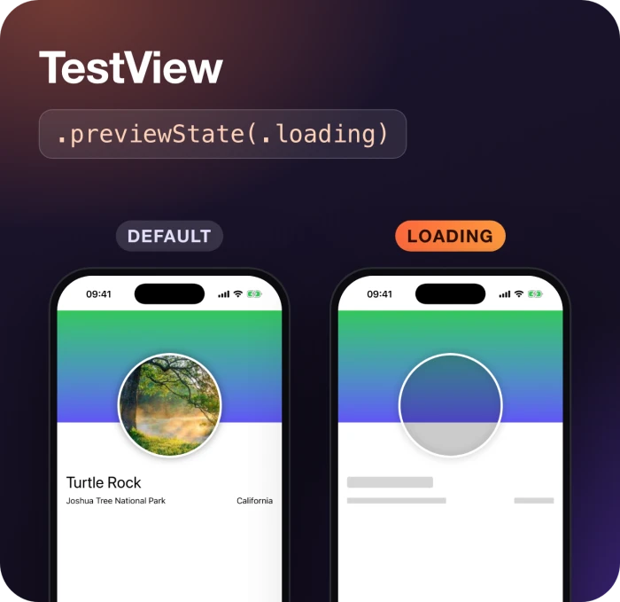
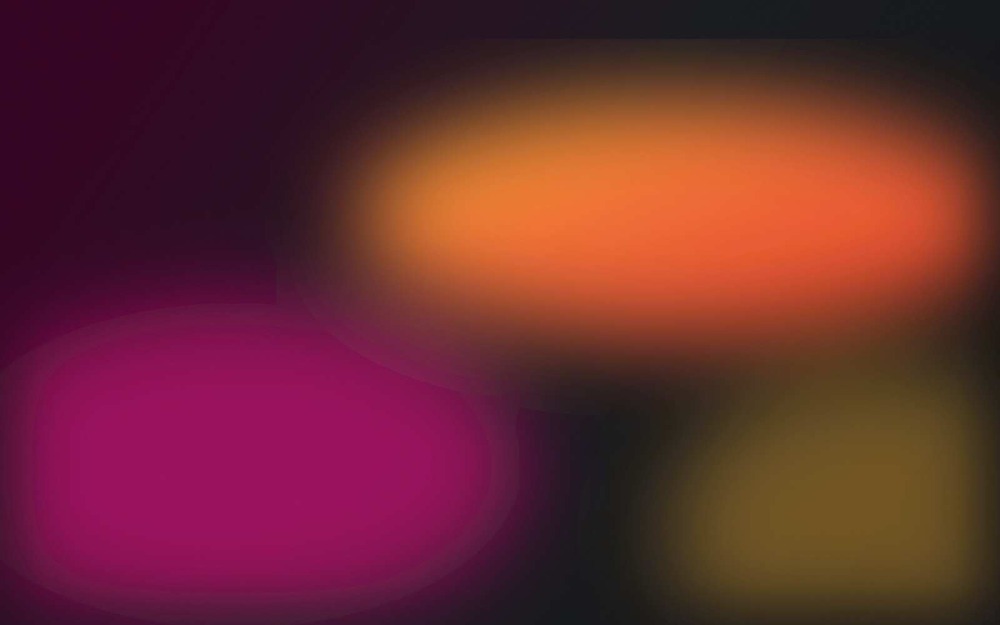
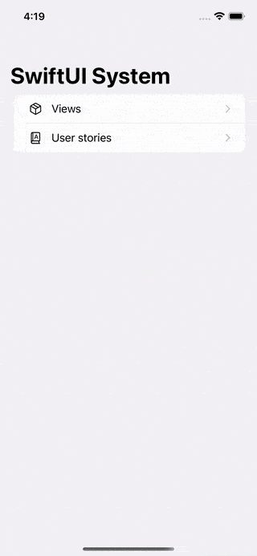
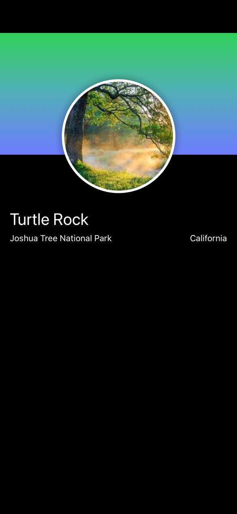
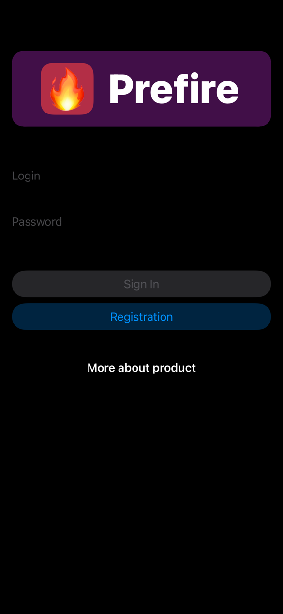
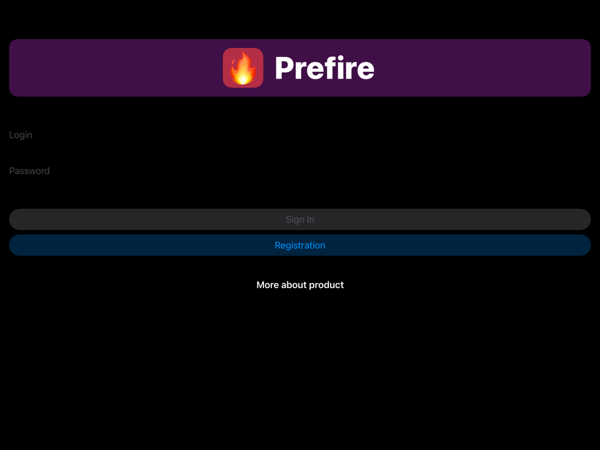

Snapshot tests
Each preview becomes a test on the devices you pick. Prefire compares it with the reference image through swift-snapshot-testing, so a changed padding fails the build, not the release.
iOS, tvOS and macOS

Prefire turns your #Preview blocks into snapshot tests, a Playbook and images your AI agent can see.
You already describe UI states in previews. Prefire reuses them, so nothing has to be written twice.
Each preview becomes a test on the devices you pick. Prefire compares it with the reference image through swift-snapshot-testing, so a changed padding fails the build, not the release.
iOS, tvOS and macOS
A catalog of every component and user story in the app, with their states and render times. Designers and QA open it on a phone instead of asking for a build of each screen.
iOS
prefire render builds the app and saves previews as PNG, on any iPhone or iPad, light or dark. The MCP server hands the same images to your agent.

An agent that edits a view has no idea how it looks. With Prefire it renders the previews it changed and checks them before calling the task done.
list_previewsrender_previewsbuild_boardXcode can render a preview too, but only while Xcode runs, one canvas at a time. Prefire renders many previews in one build, from a terminal or on CI.
# the call behind the images below render_previews( previews: ["AuthView_Preview"], devices: ["iPhone 16 Pro", "iPad"], color_scheme: "dark" )


A plugin for Xcode or SwiftPM generates the tests on build. The CLI runs the same from a terminal or CI, and serves previews to AI agents.
Add the Prefire package to the project, then add the plugin to the target that needs it in Build Phases.
Tests target PrefireTestsPlugin App target PrefirePlaybookPlugin
Add the dependency once and the plugin to the snapshot test target.
.package( url: "https://github.com/BarredEwe/Prefire.git", from: "6.4.0" ) .plugin(name: "PrefireTestsPlugin", package: "Prefire")
Install with Homebrew and run generation or rendering yourself.
brew tap barredewe/prefire brew install prefire prefire tests prefire playbook prefire render "Sign in" --device iPad --color-scheme dark
Install the CLI, add render_configuration to .prefire.yml, then connect the server from the project folder.
# Claude Code claude mcp add prefire -- prefire mcp # or the plugin with a skill /plugin marketplace add BarredEwe/Prefire /plugin install prefire@prefire # Codex codex mcp add prefire -- prefire mcp # VS Code code --add-mcp '{"name":"prefire","command":"prefire","args":["mcp"]}'
Add .prefire.yml when the defaults stop fitting the project. render_configuration tells prefire render and the MCP server which scheme to build.
test_configuration: target: PrefireExample simulator_device: "iPhone15,2" required_os: 16 playbook_configuration: preview_default_enabled: true render_configuration: scheme: PrefireExample test_target: PrefireExampleTests
Open-source apps that test their previews with Prefire.
Prefire is free and open source under Apache 2.0. A star on GitHub helps other iOS developers find it.